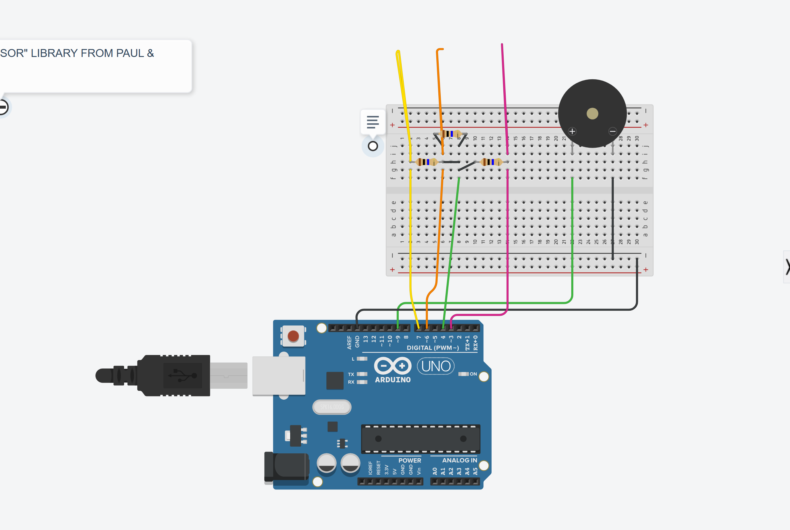
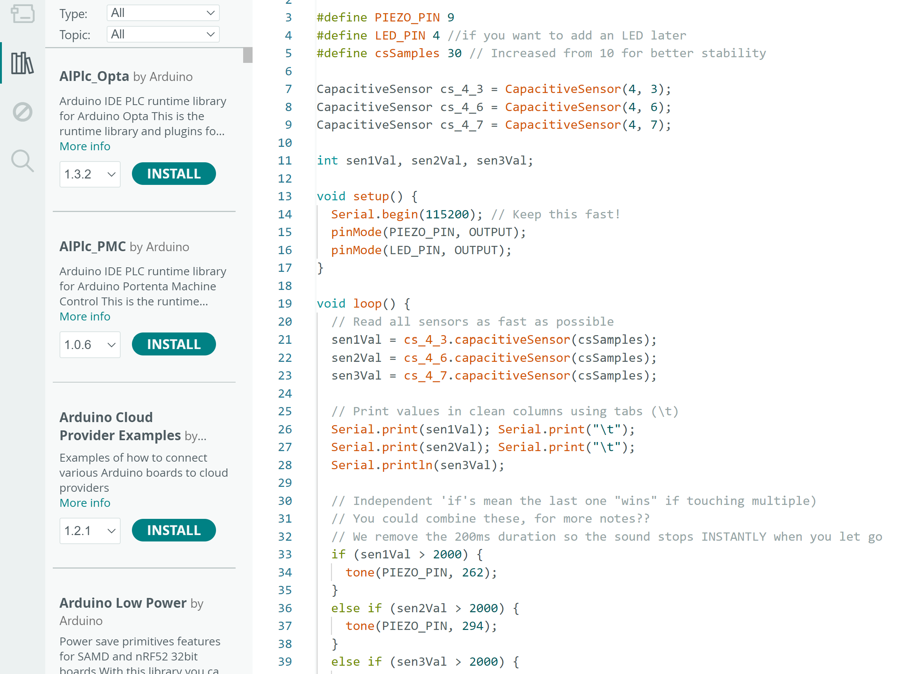

Week 8
TOUCH MUSIC MACHINE
TMM MODEL

TMM CODE

This week was genuinely unhinged in the best way. We connected wires to three things: a potato, aluminium foil, and a tree branch. Touching any of them completed a circuit and played a sound. Each of them creates different sounds. You could technically compose a whole song by tapping vegetables in sequence. The concept behind it is capacitive touch: your body conducts just enough electricity to close the circuit when you touch the object. It sounds complicated but the feeling of pressing a potato and hearing music come out of a speaker is something I did not expect to experience in a university class. In a good way. It made me think about how “instruments” don’t have to look like instruments at all.
Process, Code Snippets and Pseudocode
Touch Music Machine — Capacitive Touch
3 objects (potato, foil, branch) each trigger a different note when touched.
Pseudocode:
START
set up 3 touch sensors on pins 3, 6, 7
LOOP forever:
read value from each sensor
IF sensor 1 touched (value > 2000)
play note C (262 Hz)
ELSE IF sensor 2 touched
play note D (294 Hz)
ELSE IF sensor 3 touched
play note E (330 Hz)
ELSE
stop sound
wait 10ms
END
Arduino Code:
// Touch Music Machine — Capacitive Touch Sensor
// Source: class workshop W8
// Note: switched to 10k resistor — smoother + faster response
#include <CapacitiveSensor.h>
#define PIEZO_PIN 9 // buzzer
#define LED_PIN 4 // optional LED
#define csSamples 30 // samples per read (more = stable)
// sensor(sendPin, receivePin)
CapacitiveSensor cs_4_3 = CapacitiveSensor(4, 3); // sensor 1
CapacitiveSensor cs_4_6 = CapacitiveSensor(4, 6); // sensor 2
CapacitiveSensor cs_4_7 = CapacitiveSensor(4, 7); // sensor 3
int sen1Val, sen2Val, sen3Val; // store readings
void setup() {
Serial.begin(115200); // fast serial for monitoring
pinMode(PIEZO_PIN, OUTPUT);
pinMode(LED_PIN, OUTPUT);
}
void loop() {
// read all 3 sensors
sen1Val = cs_4_3.capacitiveSensor(csSamples);
sen2Val = cs_4_6.capacitiveSensor(csSamples);
sen3Val = cs_4_7.capacitiveSensor(csSamples);
// print to monitor (debug)
Serial.print(sen1Val); Serial.print("\t");
Serial.print(sen2Val); Serial.print("\t");
Serial.println(sen3Val);
// play note based on which object is touched
// last condition "wins" if multiple touched at once
if (sen1Val > 2000) {
tone(PIEZO_PIN, 262); // C note — potato
}
else if (sen2Val > 2000) {
tone(PIEZO_PIN, 294); // D note — foil
}
else if (sen3Val > 2000) {
tone(PIEZO_PIN, 330); // E note — branch
}
else {
noTone(PIEZO_PIN); // silence
}
delay(10); // prevent serial buffer crash
}